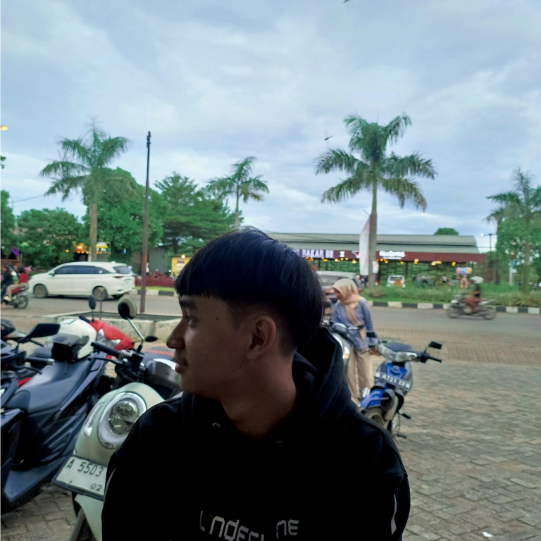

biodata
Umur: 17 tahun
Hobi: Futsal
alamat: sepatan
telepon:085752633265
Indra adalah seorang anak muda yang penuh semangat dan impian besar. Dia tinggal di sebuah desa kecil bersama keluarganya. Indra memiliki dua orang saudara, seorang kakak bernama Andi yang sangat bijaksana, dan adik bernama Yanto yang selalu penuh tawa. Meskipun usia mereka berbeda, hubungan mereka sangat dekat, selalu saling mendukung dalam suka dan duka.
Indra adalah seorang siswa yang rajin belajar. Setiap hari sepulang sekolah, dia akan duduk di meja belajarnya, ditemani tumpukan buku dan catatan yang berisi pelajaran. Andi, kakaknya, selalu memberikan nasehat dan dukungan. "Kakak dulu juga sering belajar keras seperti kamu, Indra. Jangan pernah takut gagal, yang penting kamu sudah berusaha maksimal," kata Andi dengan bijak.
Di sisi lain, Yanto, sang adik, selalu memberi semangat dengan cara yang lucu. "Indra, kalau kamu pusing, coba tidur sebentar saja. Kan, tidur itu bisa bikin otak segar," kata Yanto sambil tertawa kecil.
Suatu hari, Indra menghadapi ujian penting yang bisa menentukan kelulusannya. Dia sangat cemas, bahkan mulai merasa ragu pada dirinya sendiri. Andi melihat adiknya yang gelisah dan berkata, "Indra, ujian itu bukan hanya soal hasil, tapi tentang seberapa besar usahamu. Percayalah pada diri sendiri." Andi meletakkan tangan di bahu Indra, memberikan ketenangan.
Dengan kata-kata kakaknya, Indra merasa sedikit lebih tenang. Saat ujian tiba, meski cemas, dia berusaha memberi yang terbaik. Ternyata, beberapa minggu setelahnya, hasil ujian keluar dan Indra lulus dengan nilai yang memuaskan. Ia merasa bangga, bukan hanya karena nilai yang diraih, tetapi juga karena perjalanan panjang yang dilaluinya.
"Terima kasih, Kak Andi. Terima kasih juga, Yanto, yang selalu membuatku tersenyum," kata Indra dengan penuh rasa terima kasih. Andi tersenyum bangga, sementara Yanto hanya tertawa kecil sambil berkata, "Kamu pasti bisa, kan?"
Dengan dukungan keluarga yang selalu ada di sekitarnya, Indra belajar bahwa hidup bukan hanya tentang kesuksesan, tetapi juga tentang menghargai setiap usaha dan dukungan yang diberikan oleh orang-orang terdekat.